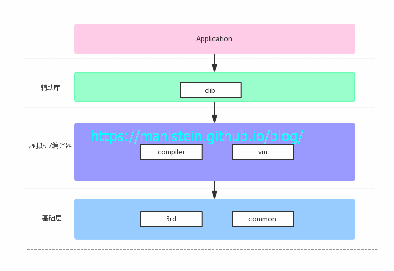
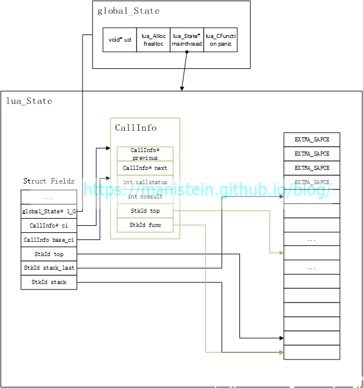
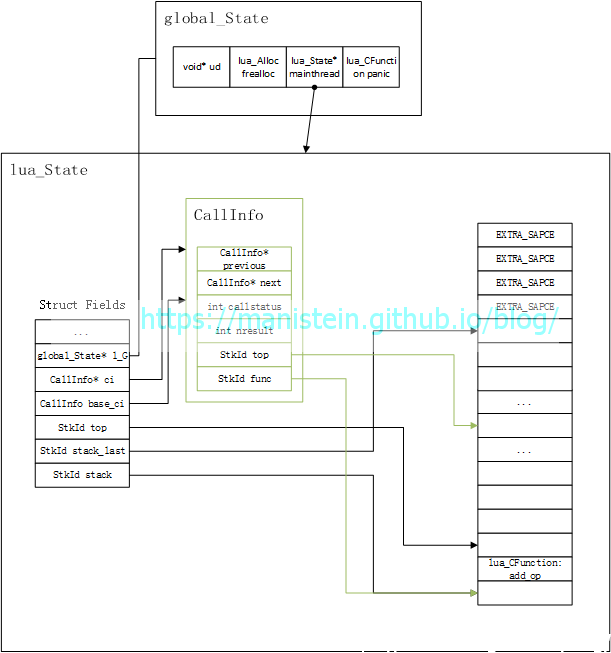
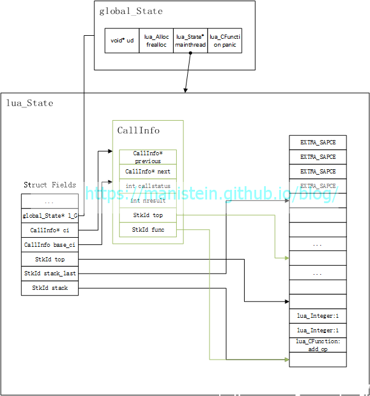
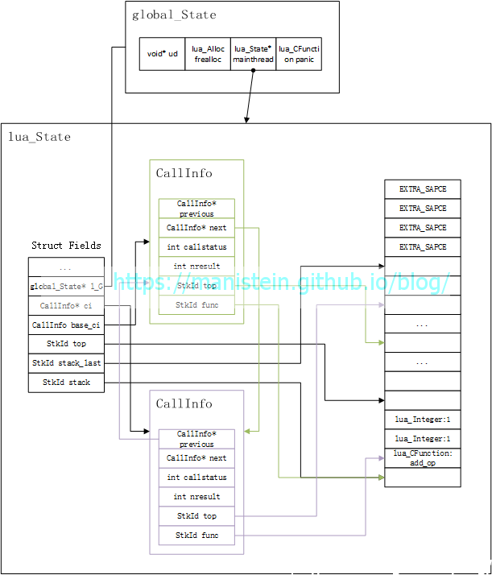
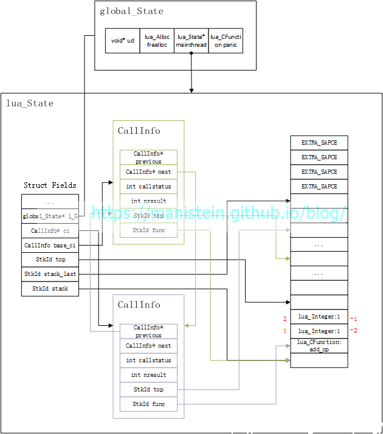
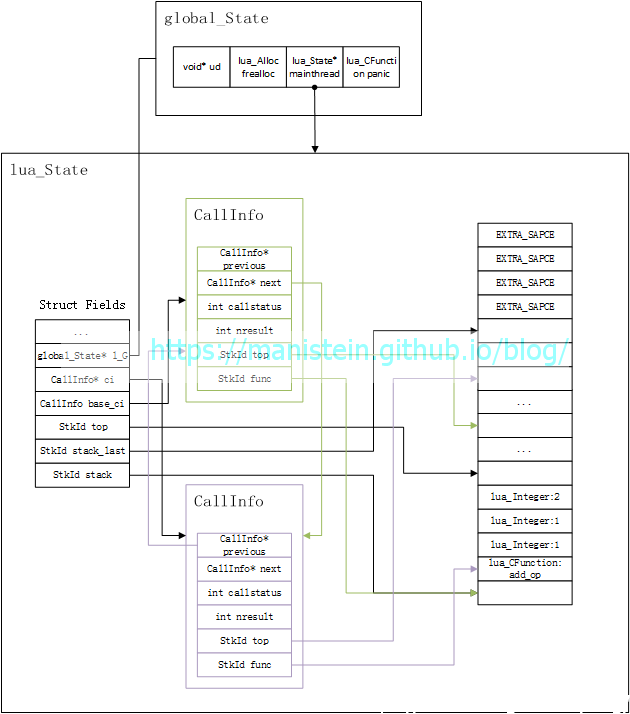
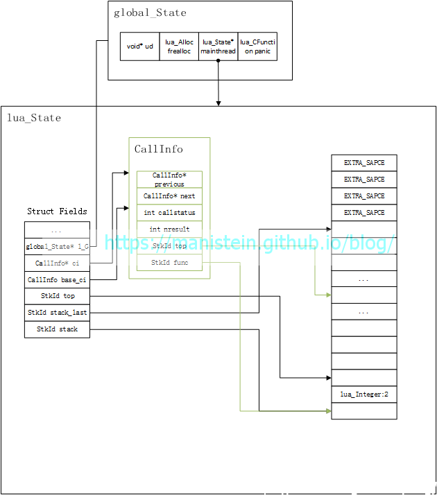

前言
从本篇开始，我们正式进入到Lua解释器的开发阶段（这是一个遵循Lua5.3标准的项目）。本篇并不直接接入到设计和实现语法分析器和词法分析器的阶段，而是先设计和实现Lua虚拟机的基础数据结构（包括Lua最基本的数据结构，如基本数据类型，表示虚拟机状态的global_State和lua_State结构，在函数调用中扮演重要角色的CallInfo结构等）以及设计和实现基于栈的C函数调用流程。这些都是理解后面虚拟机运作的基础。由于这是一个仿制项目，为了和官方版本做区分，就称之为dummylua，后面要称呼本项目时，一律用dummylua来表示。
本篇将分为几个部分：首先介绍工程目录结构的组织，以及为什么要这样组织，每个目录分别包含哪些文件，这些文件分别包含哪些内容；其次是着手进行Lua基本类型的设计与实现，实现表示Lua虚拟机状态的global_State和lua_State结构，以及用于函数调用的CallInfo结构；接着是设计我们在使用层，要实现C函数，在栈中调用流程的api，并且构建从虚拟机状态初始化到函数完成调用的逻辑图，阐述这个过程；最后通过编写代码，将所有的流程实现。第一部分的功能已经完成开发和测试（ubuntu、mac和windows平台），获取源码可以点击这里，欢迎Star。
目录结构
在开始介绍项目的目录结构之前，我们不妨先回顾以下Lua运作的两种基本模式。一种是创建Lua虚拟机，直接加载脚本并且直接运行，其遵循如下流程：
- 创建Lua虚拟机状态实例
- 加载标准库
- 加载脚本，通过词法分析器lexer和语法分析器parser将脚本编译成Lua虚拟机能够识别的opcodes，并存储在虚拟机状态实例中
- 运行虚拟机，对虚拟机状态实例中的opcodes进行执行
还有一种则是，预先将脚本编译，然后将内存中的指令信息，dump到文件中，以bytecode的形式存在，以后要运行的时候，直接加载dump文件的bytecode并且直接运行：
- 创建Lua虚拟机状态实例
- 加载标准库
- 加载脚本，通过词法分析器lexer和语法分析器parser将脚本编译成Lua虚拟机能够识别的opcodes，并存储在虚拟机状态实例中
- 将虚拟机指令dump成二进制文件，以bytecode的形式保存
- 在将来某个时刻，运行Lua虚拟机，并加载dump后的文件，直接通过dump数据，将指令结构还原回来，保存在虚拟机状态实例中
- 运行虚拟机，对虚拟机状态实例中的opcodes进行执行
这两种方式，前者从虚拟机创建到加载脚本，再到运行一气呵成。后者需要预先将Lua脚本编译成bytecode，然后要使用的时候再加载运行，运行时省去了编译流程，比前者更快。不过现在Lua直接加载脚本并运行已经足够快了，除非对性能有极其苛刻的要求，否则前者已经能够满足我们的日常需要了。下面引用一张《The Lua Architecture》[1]中的一张图，来展示一下后面一种方式的流程。
 图1
图1
从上图，我们可以了解到一个流程，就是我们要运行Lua脚本，首先要创建Lua解释器（由于Lua是采用纯C来写的工程，因此函数和数据是分离的，这里其实也只是创建一个Lua虚拟机状态实例，也就是后面我们要介绍的lua_State结构和global_State结构），然后通过编译器（lexer和parser）将脚本编译成虚拟机能够识别的指令（opcodes），再交给虚拟机执行。因此，我们可以将编译和运行分割开来，他们共同使用的部分也单独抽离出来，于是我们的目录结构可以按如下所示的方式组织：
+ 3rd/ #引用的第三方库均放置在这里
+ bin/ #编译生成的二进制文件放置在这里
+ clib/ #外部要在c层使用Lua的C API，那么只能调用clib里提供的接口，而不能调用其他内部接口
+ common/ #vm和compiler共同使用的结构、接口均放置在这里
+ compiler/ #编译器相关的部分放置在这里
+ test/ #测试用例全部放置在这里
+ vm/ #虚拟机相关的部分放置在这里
main.c
makefile 我们有理由相信，目录组织也是架构的一部分，上面附上了目录说明，能够清晰说明他们的分类和作用。我想构建的逻辑层次图如下所示
图2
3rd和common作为vm和compiler的基础模块而存在，外部在使用c接口的时候，只能通过clib里的辅助库来进行，以隐藏不必要暴露的细节。在定下目录结构以后，接下来将展示不同的文件分别有哪些文件。
目录组织完成以后，接下来确定有哪些文件了，我将文件内容展示到下面部分：
+ 3rd/ #引用的第三方库均放置在这里
+ bin/ #编译生成的二进制文件放置在这里
~ clib/ #外部要在c层使用Lua的C API，那么只能调用clib里提供的接口，而不能调用其他内部接口
luaaux.h #供外部使用的辅助库
luaaux.c
~ common/ #vm和compiler共同使用的结构、接口均放置在这里
lua.h #提供lua基本类型的定义，错误码定义，全项目都可能用到的宏均会放置在这里
luamem.h #lua内存分配器
luamem.c
luaobject.h #lua基本类型
luaobject.c
luastate.h #虚拟机状态结构，以及对其相关操作的接口均放置于此
luastate.c
+ compiler/ #编译器相关的部分放置在这里
+ test/ #测试用例全部放置在这里
~ vm/ #虚拟机相关的部分放置在这里
luado.h #函数调用相关的接口均放置于此
luado.c
main.c
makefile上面展示了我们本部分要实现的部分，后续开发会陆续添加新的文件，后面章节也会陆续引用这个片段。到现在为止，我们的目录结构就介绍完了，后面将介绍基本数据结构。
基本数据结构
基本类型
Lua的基本类型，包括lua_Integer、lua_Number、lu_byte、lua_CFunction等，当然最典型的的则是其能够代表任何基本类型的TValue结构了。现在我们将逐一实现这些类型。
首先我们要实现两个宏，LUA_INTEGER和LUA_NUMBER在common/lua.h里
// common/lua.h
#ifndef lua_h
#define lua_h
#if defined(LLONG_MAX)
#define LUA_INTEGER long long
#define LUA_NUMBER double
#else
#define LUA_INTEGER int
#define LUA_NUMBER float
#endif
#endif 然后在common/luaobject.h中加入下面几行代码：
// common/luaobject.h
#ifndef luaobject_h
#define luaobject_h
#include "lua.h"
typedef LUA_INTEGER lua_Integer;
typedef LUA_NUMBER lua_Number;
#endif 此时我们的lua_Integer和lua_Number类型就定义完了，这里要先在common/lua.h中定义LUA_INTEGER的目的是让LUA_INTEGER适配32bit和64bit两种编译环境的逻辑保留在lua.h中。适配的目的也是为了后面的Value结构的各个字段能够完美对齐。官方实现版本，甚至对编译器类型做了适配，这里我们只考虑32bit和64bit的情况。
接下来我们要定义lu_byte和lua_CFunction两种基本类型，他们的定义如下所示：
// common/luaobject.h
#ifndef luaobject_h
#define luaobject_h
#include "lua.h"
typedef struct lua_State lua_State;
typedef LUA_INTEGER lua_Integer;
typedef LUA_NUMBER lua_Number;
typedef unsigned char lu_byte;
typedef int (*lua_CFunction)(lua_State* L);
#endif lu_byte是个unsigned char类型，官方将其取名作lu_byte也许是表示lua unsigned byte的意思吧。而lua_CFunction基本上就是Lua栈中，能被调用的light c function的形式了。
在完成了最基本类型的定义后，现在要来定义Lua的通用数据类型Value和TValue了，我们将这两个数据结构定义在common/luaobject.h中：
// common/luaobject.h
#ifndef luaobject_h
#define luaobject_h
#include "lua.h"
...
typedef union lua_Value {
void* p; // light userdata
int b; // boolean: 1 = true, 0 = false
lua_Integer i;
lua_Number n;
lua_CFunction f;
} Value;
typedef struct lua_TValue {
Value value_;
int tt_;
} TValue;
#endif Value是一个union类型，以上5种类型在32bit环境下，共用4个字节的内存，在64bit环境下共用8个字节的内存，这样做的目的是为了节约内存，p指针是用来存放light userdata的，这种值在官方Lua中，需要我们自行管理内存，由于目前我们没有实现gc，因此所有的自定义类型被创建出来后，均放在p中。TValue包含了Value类型的值value_，以及使用一个int变量tt_表示其类型。我们可以使用TValue来表示任何Lua对象。此外TValue的类型定义在common/lua.h中，如下所示：
// common/lua.h
// basic object type
#define LUA_TNUMBER 1
#define LUA_TLIGHTUSERDATA 2
#define LUA_TBOOLEAN 3
#define LUA_TSTRING 4
#define LUA_TNIL 5
#define LUA_TTABLE 6
#define LUA_TFUNCTION 7
#define LUA_TTHREAD 8
#define LUA_TNONE 9由于名称都很直观，这里就不加注释了。上面阐述的还是一般类型，其中LUA_TNUMBER、LUA_TSTRING和LUA_TFUNCTION还可以细分，我将细分的类型在common/luaobject.h里定义，放在这里更加贴近使用它的接口：
// common/luaobject.h
// lua number type
#define LUA_NUMINT (LUA_TNUMBER | (0 << 4))
#define LUA_NUMFLT (LUA_TNUMBER | (1 << 4))
// lua function type
#define LUA_TLCL (LUA_TFUNCTION | (0 << 4))
#define LUA_TLCF (LUA_TFUNCTION | (1 << 4))
#define LUA_TCCL (LUA_TFUNCTION | (2 << 4))
// string type
#define LUA_LNGSTR (LUA_TSTRING | (0 << 4))
#define LUA_SHRSTR (LUA_TSTRING | (1 << 4))可以观察到，Lua数值的大类型定义的值在1~8之间，也就是00012~10002之间，那么小类型不能占用低四位，只能往高位作文章，因此他们分别的含义为：
- LUA_NUMINT <=> LUA_TNUMBER | (0 << 4) <=> 00012 | 00002 <=> 00012 <=> 1
- LUA_NUMFLT <=> LUA_TNUMBER | (1 << 4) <=> 00012 | 100002 <=> 100012 <=> 17
- LUA_TLCL <=> LUA_TFUNCTION | (0 << 4) <=> 01112 | 00002 <=> 01112 <=> 7
- LUA_TLCF <=> LUA_TFUNCTION | (1 << 4) <=> 01112 | 100002 <=> 101112 <=> 23
- LUA_TCCL <=> LUA_TFUNCTION | (2 << 4) <=> 01112 | 1000002 <=> 1001112 <=> 39
- LUA_LNGSTR <=> LUA_TSTRING | (0 << 4) <=> 01002 | 00002 <=> 01002 <=> 4
- LUA_SHRSTR <=> LUA_TSTRING | (1 << 4) <=> 01002 | 100002 <=> 101002 <=> 20
这些类型值，将被存储在TValue的tt_变量中。到目前为止我们已经介绍完了Lua基本数据类型。接下来我们将定义lua_State和global_State。
lua_State、CallInfo和global_State
在介绍完TValue数据结构以后，接下来要介绍和虚拟机息息相关的虚拟机状态数据结构lua_State和global_State。如果说，虚拟机指令要在栈上运行，那么这个栈就是保存在lua_State这个结构体中。同时我们的CallInfo结构，用于标记函数在栈中的位置，标记调用函数时，它的栈顶位于lua_State栈中的哪个位置，同时它还保存要返回多少个返回值的标记。而global_State则是包含了lua_State和一个内存分配器等，透过global_State来管理内存和lua_State是非常方便的事情，在官方的Lua版本中，我们还需要透过它来管理gc。现在我们来定义这些个结构体，将其定义在common/luastate.h中：
// common/luastate.h
typedef TValue* StkId;
struct CallInfo {
StkId func; // 被调用函数在栈中的位置
StkId top; // 被调用函数的栈顶位置
int nresult; // 有多少个返回值
int callstatus; // 调用状态
struct CallInfo* next; // 下一个调用
struct CallInfo* previous; // 上一个调用
};
typedef struct lua_State {
StkId stack; // 栈
StkId stack_last; // 从这里开始，栈不能被使用
StkId top; // 栈顶，调用函数时动态改变
int stack_size; // 栈的整体大小
struct lua_longjmp* errorjmp; // 保护模式中，要用到的结构，当异常抛出时，跳出逻辑
int status; // lua_State的状态
struct lua_State* next; // 下一个lua_State，通常创建协程时会产生
struct lua_State* previous;
struct CallInfo base_ci; // 和lua_State生命周期一致的函数调用信息
struct CallInfo* ci; // 当前运作的CallInfo
struct global_State* l_G; // global_State指针
ptrdiff_t errorfunc; // 错误函数位于栈的哪个位置
int ncalls; // 进行多少次函数调用
} lua_State;
typedef struct global_State {
struct lua_State* mainthread; // 我们的lua_State其实是lua thread，某种程度上来说，它也是协程
lua_Alloc frealloc; // 一个可以自定义的内存分配函数
void* ud; // 当我们自定义内存分配器时，可能要用到这个结构，但是我们用官方默认的版本
// 因此它始终是NULL
lua_CFunction panic; // 当调用LUA_THROW接口时，如果当前不处于保护模式，那么会直接调用panic函数
// panic函数通常是输出一些关键日志
} global_State;我将结构的说明，直接写到了注释里，这些注释能够对结构进行很好的解释和说明了。现在我们也完成了CallInfo、lua_State和global_State的定义了，接下来进入下一个阶段。
函数调用流程
到目前为止，我们已经完成了Lua基本数据结构的定义，本篇的目标除了定义这些数据结构，对其中的字段加以说明之外，还将设计和实现c函数在lua_State栈中的调用。在开始实现具体细节之前，我们不妨从应用程序调用的视角来观察这个流程。我们以如下的代码为例子：
// main.c
#include "clib/luaaux.h"
static int add_op(struct lua_State* L) {
int left = luaL_tointeger(L, -2);
int right = luaL_tointeger(L, -1);
luaL_pushinteger(L, left + right);
return 1;
}
int main(int argc, char** argv) {
struct lua_State* L = luaL_newstate(); // 创建虚拟机状态实例
luaL_pushcfunction(L, &add_op); // 将要被调用的函数add_op入栈
luaL_pushinteger(L, 1); // 参数入栈
luaL_pushinteger(L, 1);
luaL_pcall(L, 2, 1); // 调用add_op函数，并将结果push到栈中
int result = luaL_tointeger(L, -1); // 完成函数调用，栈顶就是add_op放入的结果
printf("result is %d\n", result);
luaL_pop(L); // 结果出栈，保证栈的正确性
printf("final stack size %d\n", luaL_stacksize(L));
luaL_close(L); // 销毁虚拟机状态实例
system("pause");
return 0;
}正如我们之前设计的那样，要使用dummylua的接口，只能使用clib库里的luaaux.h里定义的接口，这些接口的开头一律以luaL*表示，L指代Lib（官方能调用的接口并非均是以luaL*开头的，这点需要强调一下）。上面一段代码，我们先创建了一个lua_State实例，然后push了要调用的函数和参数，最终调用了这个函数，这个函数最终将结果入栈，并返回给调用者。在探索代码细节之前，我先绘制几张逻辑图，来描述这个过程，以更好地让大家理解这个逻辑调用过程。
首先我们调用了luaL_newstate接口，用于创建和初始化lua_State实例，这个接口不仅仅会创建lua_State实例，也会创建一个global_State实例，并且初始化它们，global_State对外部是不可见的，它是Lua虚拟机内部使用的一个结构，在完成函数调用以后，我们可以得到图3的结构：
图3
我们可以看到，global_State实例也被一起创建了，并且将mainthread指针指向了lua_State实例，lua_State默认就有一个CallInfo类型的变量base_ci，这个CallInfo的func和top指针，指明了一个被调用的函数所能使用的栈的范围，每当我们调用一个新的函数时，会从lua_State的stack中，取出一段作为该函数的栈空间，开始位置是CallInfo类型变量func指针的下一个位置，而能被使用的栈空间限制一般是20个（官方版本由LUA_MINSTACK这个宏指定）。此外lua_State的stack指针，指向了栈起始的位置，而从stack_last开始，包括后面的EXTRA_SPACE则是不能被使用的空间。lua_State中的top指针，则是在函数调用的过程中，动态改变的，它标记着正在被调用函数的栈顶位置。另外还要强调的一点，则是CallInfo的func指针，实质上是指向一个函数实例（base_ci除外），而这个被func指针指向的位置，是不能作为栈顶存在的，也就是说，当前函数在被调用时，如果它是空栈，那么lua_State的top指针将落在L->ci->func的上一格位置。正如上图所示，现在它是一个空栈。
在完成虚拟机状态实例创建以后，我们需要往lua_State的栈中，push我们希望被调用的函数，这个函数在我们使用的例子中，就是add_op，我们通过一张图展示，在luaL_pushcfunction执行完以后的状态：
图4
目前看起来平平无奇，接下来将两个参数入栈，于是得到函数调用前的栈状态：
图5
在完成参数入栈以后，我们就需要开始调用add_op这个函数了，调用它的方式是执行luaL_pcall(L, 2, 1)这行代码，这两个参数分别表示，我们传入两个参数，并且期待一个返回值。函数调用的过程稍微有点复杂，但是相对于后面涉及到的虚拟机运作，还算是小巫见大巫。要开始函数调用，首先要构建新的CallInfo实例，它会指定add_op运行时，该函数栈可以使用的范围同时也包含，这个函数被期待返回多少个函数，于是我们可以得到如图6所示的状态：
图6
从图中我们可以看到，新创建的CallInfo对象归属于add_op这个函数，CallInfo的func指针指向了add_op这个函数的位置，同时新创建的CallInfo对象的func和top指针限定了add_op能够使用的栈空间的范围。同时我们也可以观察到lua_State数据实例的ci指针指向了新创建的CallInfo实例，函数调用结束后，它会指向上一个CallInfo数据实例，ci指针本质就是用来标记当前调用的是哪个函数。在完成CallInfo创建以后，就可以开始调用add_op这个函数了。在开始调用之前，我们先来看看栈的索引，我们可以观察到如图7所示，当索引为正时，add_op函数栈的栈底从1开始，并且朝栈顶递增，如果索引为负数时，add_op函数栈的栈顶从-1开始，并且朝栈底递减。
图7
在了解了栈索引的操作以后，add_op内部的操作也就清晰明了了，就是把两个参数取出相加以后入栈（add_op最后的return 1，则表示add_op实际上有一个返回值）于是得到如图8所示的状态：
图8
现在进入到add_op函数的最后调用阶段，就是销毁当前的CallInfo实例，并且将返回值移到add_op的位置（大家可以尝试推导一下多个返回值的情况），于是得到图9的状态
图9
现在控制权又回到了main函数了，main函数直接将栈顶变量取出打印，然后是把add_op的返回值出栈，于是我们就完成了完整的函数调用了。
函数调用实现
创建虚拟机实例
在完成展现逻辑图以后，我们现在开始着手实现具体的逻辑。本节将逐步设计和实现上节引用例子的各个步骤，首先我们要实现的是luaL_newstate接口，这个接口我定义在clib/luaaux.h clib/luaaux.c中，它的定义和实现如下所示：
// clib/luaaux.h
struct lua_State* luaL_newstate();
// clib/luaaux.c
static void* l_alloc(void* ud, void* ptr, size_t osize, size_t nsize) {
(void)ud;
(void)osize;
// printf("l_alloc nsize:%ld\n", nsize);
if (nsize == 0) {
free(ptr);
return NULL;
}
return realloc(ptr, nsize);
}
struct lua_State* luaL_newstate() {
struct lua_State* L = lua_newstate(&l_alloc, NULL);
return L;
}如上所示，luaL_newstate实际上，是转调了另一个库的接口lua_newstate，luaL_newstate为其指定了一个内存分配函数l_alloc。而我们的lua_newstate函数则定义在common/luastate.h common/luastate.c中，它们的定义是：
// common/luastate.h
#define LUA_EXTRASPACE sizeof(void*)
#define G(L) ((L)->l_G)
struct lua_State* lua_newstate(lua_Alloc alloc, void* ud);
// common/luastate.c
struct lua_State* lua_newstate(lua_Alloc alloc, void* ud) {
struct global_State* g;
struct lua_State* L;
struct LG* lg = (struct LG*)(*alloc)(ud, NULL, LUA_TTHREAD, sizeof(struct LG));
if (!lg) {
return NULL;
}
g = &lg->g;
g->ud = ud;
g->frealloc = alloc;
g->panic = NULL;
L = &lg->l.l;
G(L) = g;
g->mainthread = L;
stack_init(L);
return L;
}lua_newstate实际上是为global_State和lua_State开辟内存，并完成初始化。这里lua_newstate使用了从luaL_newstate传入的内存分配函数，这个函数的作用和c语言中的realloc类似，但是它规定，当nsize（意为new size）为0时，要将内存释放掉。对于realloc[2]这个函数，使用它非常方便，它的作用是先开辟nsize的内存，将旧的内容拷贝到新的内存块后再释放原来的内存，省去了我们手工处理的逻辑。而开辟内存本身，我们可以注意到，它并不是单独为global_State和lua_State开辟内存，而是使用了一个叫做LG的数据结构：
// common/luastate.c
typedef struct LX {
lu_byte extra_[LUA_EXTRASPACE];
lua_State l;
} LX;
typedef struct LG {
LX l;
global_State g;
} LG;这是参照官方版本做的设计，我们可以看到这里整合了一个global_State变量和一个LX变量，LX结构包含了一个lua_State类型的变量和一个LUA_EXTRASPACE大小的lu_byte数组变量extra_，这个变量我在官方版本中没有搜到使用到他的地方，也许是个历史遗留问题。至于为什么要通过一个LG结构，将global_State和lua_State绑定在一起？这里我在云风的《lua源码欣赏》找到这样的解释[3]：
Lua的实现尽可能的避免内存碎片，同时也减少内存分配和释放的次数。它采用了一个小技巧，利用一个LG结构，把主线程lua_State和global_State分配在一起。
余下的逻辑就是global_State和lua_State的初始化操作，对于lua_State而言，它还需要进行栈相关的初始化stack_init：
// luastate.c
static void stack_init(struct lua_State* L) {
L->stack = (StkId)luaM_realloc(L, NULL, 0, LUA_STACKSIZE * sizeof(TValue));
L->stack_size = LUA_STACKSIZE;
L->stack_last = L->stack + LUA_STACKSIZE - LUA_EXTRASTACK;
L->next = L->previous = NULL;
L->status = LUA_OK;
L->errorjmp = NULL;
L->top = L->stack;
L->errorfunc = 0;
int i;
for (i = 0; i < L->stack_size; i++) {
setnilvalue(L->stack + i);
}
L->top++;
L->ci = &L->base_ci;
L->ci->func = L->stack;
L->ci->top = L->stack + LUA_MINSTACK;
L->ci->previous = L->ci->next = NULL;
}这里它为lua_State开辟LUA_STACKSIZE（官方定义40）大小的栈，并且设定了L->top不能访问的区域，即stack_last以及往后的EXTRA_SPACE部分。至于EXTRA_SPACE的作用，我个人的观点是避免爆栈时（L->top指针超越L->stack_last），访问了其他内存区域破坏其他内存块，这里被作为一个容错的缓冲区。其他部分则是各个变量的初始化，包括为base_ci赋初值（限定栈范围等）。直接通过调用global_State的frealloc函数来开辟内存，是非常繁琐的，而且还可能遇到内存不足的情况，遇到这种情况为每一个调用内存的地方做NULL指针判定是相当冗余的，于是我在common/luamem.h common/luamem.c中定义了一个luaM_realloc接口，M代表memory：
// luamem.h
void* luaM_realloc(struct lua_State* L, void* ptr, size_t osize, size_t nsize);
// luamem.c
void* luaM_realloc(struct lua_State* L, void* ptr, size_t osize, size_t nsize) {
struct global_State* g = G(L);
int oldsize = ptr ? osize : 0;
void* ret = (*g->frealloc)(g->ud, ptr, oldsize, nsize);
if (ret == NULL) {
luaD_throw(L, LUA_ERRMEM);
}
return ret;
}这个接口只是多做了一个NULL指针判定，当内存申请失败时，调用luaD_throw抛出异常，这个luaD_throw后面介绍以保护模式调用函数时会进行说明。走到这一步我们的luaL_newstate流程也完成了，它的形态就是图3所示的那样。
销毁虚拟机实例
在介绍完创建虚拟机状态，那么相应的需要介绍销毁虚拟机状态的接口，这个就是我们要实现的luaL_close函数，和luaL_newstate一样，它定义在clib/luaaux.h clib/luaaux.c中
// clib/luaaux.h
void luaL_close(struct lua_State* L);
// clib/luaaux.c
void luaL_close(struct lua_State* L) {
lua_close(L);
}它同样是转调common/luastate.h里的接口
// common/luastate.h
void lua_close(struct lua_State* L);
// common/luastate.c
#define fromstate(L) (cast(LX*, cast(lu_byte*, (L)) - offsetof(LX, l)))
static void free_stack(struct lua_State* L) {
global_State* g = G(L);
(*g->frealloc)(g->ud, L->stack, sizeof(TValue), 0);
L->stack = L->stack_last = L->top = NULL;
L->stack_size = 0;
}
void lua_close(struct lua_State* L) {
struct global_State* g = G(L);
struct lua_State* L1 = g->mainthread; // only mainthread can be close
// because I have not implement gc, so we should free ci manual
struct CallInfo* ci = &L1->base_ci;
while(ci->next) {
struct CallInfo* next = ci->next->next;
struct CallInfo* free_ci = ci->next;
(*g->frealloc)(g->ud, free_ci, sizeof(struct CallInfo), 0);
ci = next;
}
free_stack(L1);
(*g->frealloc)(g->ud, fromstate(L1), sizeof(LG), 0);
}整个逻辑很简单，先把CallInfo实例释放掉，然后再把lua_State的stack释放掉，最后把整个LG释放掉（上面已经解释过它是包含global_State和lua_State类型的结构）。这里需要注意的一点，则是宏fromstate，它实际上是通过luaState指针L，通过offsetof函数，找到LG的起始位置，最终将整个LG释放掉，而 offsetof需要我们指定类或结构体中成员的名称，offsetof函数接受两个参数，第一个是类或结构体的名称，第二个是成员变量名，将第一个成员变量名传入我们会获得0。由于fromstate这个宏中的offsetof调用，是将LX的成员l传入，因此offsetof获得值就是sizeof(extra )，对于lua_State L而言，它正好能找到LG的起始地址，因此可以通过这种方式一并将lua_State和global_State释放。
参数入栈
参数入栈其实就是将指定类型的值push到栈中，为此我实现了luaL_pushinteger、luaL_pushnumber、luaL_pushlightuserdata、luaL_pushnil、luaL_pushcfunction和luaL_pushboolean，这些函数都在clib/luaaux.h clib/luaaux.c中，他们同样是转调common/luastate.h common/luastate.c的接口，这里就不一一列举他们的实现了。push的操作也很简单，其实就是对L->top指向的位置赋值，然后L->top++，因此我们首先要对每种类型都实现一个set函数：
// common/luastate.h
void setivalue(StkId target, int integer);
void setfvalue(StkId target, lua_CFunction f);
void setfltvalue(StkId target, float number);
void setbvalue(StkId target, bool b);
void setnilvalue(StkId target);
void setpvalue(StkId target, void* p);
void setobj(StkId target, StkId value);
// common/luastate.c
void setivalue(StkId target, int integer) {
target->value_.i = integer;
target->tt_ = LUA_NUMINT;
}
void setfvalue(StkId target, lua_CFunction f) {
target->value_.f = f;
target->tt_ = LUA_TLCF;
}
void setfltvalue(StkId target, float number) {
target->value_.n = number;
target->tt_ = LUA_NUMFLT;
}
void setbvalue(StkId target, bool b) {
target->value_.b = b ? 1 : 0;
target->tt_ = LUA_TBOOLEAN;
}
void setnilvalue(StkId target) {
target->tt_ = LUA_TNIL;
}
void setpvalue(StkId target, void* p) {
target->value_.p = p;
target->tt_ = LUA_TLIGHTUSERDATA;
}
void setobj(StkId target, StkId value) {
target->value_ = value->value_;
target->tt_ = value->tt_;
}之前我们介绍了TValue，这里其实就是为每一种类型的域赋值，并且为其加上类型，功能简单没有什么要说明的，对于push函数，这里仅举一例lua_pushinteger，其他的实现方法类似，大家可以直接去dummylua的工程里找.
// common/luastate.h
void increase_top(struct lua_State* L);
void lua_pushinteger(struct lua_State* L, int integer);
// common/luastate.c
void increase_top(struct lua_State* L) {
L->top++;
assert(L->top <= L->ci->top);
}
void lua_pushinteger(struct lua_State* L, int integer) {
setivalue(L->top, integer);
increase_top(L);
}出栈
出栈操作非常简单，只需要让L->top–，同时要注意top指针不要<=L->ci->func
// common/luastate.h
void lua_settop(struct lua_State* L, int idx);
int lua_gettop(struct lua_State* L);
void lua_pop(struct lua_State* L);
// common/luastate.c
int lua_gettop(struct lua_State* L) {
return cast(int, L->top - (L->ci->func + 1));
}
void lua_settop(struct lua_State* L, int idx) {
StkId func = L->ci->func;
if (idx >=0) {
assert(idx <= L->stack_last - (func + 1));
while(L->top < (func + 1) + idx) {
setnilvalue(L->top++);
}
L->top = func + 1 +idx;
}
else {
assert(L->top + idx > func);
L->top = L->top + idx;
}
}
void lua_pop(struct lua_State* L) {
lua_settop(L, -1);
}这里引入了设置栈顶指针的函数settop，逻辑也非常直观，这里不作解释。
获取栈上的值
获取栈上的值，实际上就是要传入栈的索引，然后获取它的值，通常我们需要该位置的值是什么类型，因此通常是一个尝试性的操作如lua_tointeger(L, -1)，是尝试将栈顶(L->top - 1)的值转成integer类型，期间可能成功，也可能失败，这里仅举lua_tointeger的例子，其他部分可以到dummylua工程里查阅。
// clib/luaaux.h
lua_Integer luaL_tointeger(struct lua_State* L, int idx);
// clib/luaaux.c
lua_Integer luaL_tointeger(struct lua_State* L, int idx) {
int isnum = 0;
lua_Integer ret = lua_tointegerx(L, idx, &isnum);
return ret;
}
// common/luastate.h
lua_Integer lua_tointegerx(struct lua_State* L, int idx, int* isnum);
// common/luastate.c
static TValue* index2addr(struct lua_State* L, int idx) {
if (idx >= 0) {
assert(L->ci->func + idx < L->ci->top);
return L->ci->func + idx;
}
else {
assert(L->top + idx > L->ci->func);
return L->top + idx;
}
}
lua_Integer lua_tointegerx(struct lua_State* L, int idx, int* isnum) {
lua_Integer ret = 0;
TValue* addr = index2addr(L, idx);
if (addr->tt_ == LUA_NUMINT) {
ret = addr->value_.i;
*isnum = 1;
}
else {
*isnum = 0;
LUA_ERROR(L, "can not convert to integer!\n");
}
return ret;
}luaL_pcall实现
在开始介绍pcall之前，我们先来看看不在保护模式下的函数调用逻辑是怎么实现的，这一些列操作包含在luaD_call函数内，它被定义在vm/luado.h vm/luado.c上
// vm/luado.h
int luaD_call(struct lua_State* L, StkId func, int nresult);
// vm/luado.c
int luaD_call(struct lua_State* L, StkId func, int nresult) {
if (++L->ncalls > LUA_MAXCALLS) {
luaD_throw(L, 0);
}
if (!luaD_precall(L, func, nresult)) {
// TODO luaV_execute(L);
}
L->ncalls--;
return LUA_OK;
}其中的func参数，指定了要被调用函数的栈地址，而nresult则指定了，这个函数被期望返回多少个返回值。这里并没有直接执行func，而是调用了一个luaD_precall为函数调用做准备，这个函数主要预处理lua函数调用的情况，如果调用的是light c function，那么就是直接执行，而不用进入到后续章节我们将实现的luaV_execute中去执行虚拟机指令。这个函数同样定义在vm/luado.h 和vm/luado.c中
// vm/luado.h
int luaD_precall(struct lua_State* L, StkId func, int nresult);
// vm/luado.c
// prepare for function call.
// if we call a c function, just directly call it
// if we call a lua function, just prepare for call it
int luaD_precall(struct lua_State* L, StkId func, int nresult) {
switch(func->tt_) {
case LUA_TLCF: {
lua_CFunction f = func->value_.f;
ptrdiff_t func_diff = savestack(L, func);
luaD_checkstack(L, LUA_MINSTACK); // 检查lua_State的空间是否充足，如果不充足，则需要扩展
func = restorestack(L, func_diff);
next_ci(L, func, nresult);
int n = (*f)(L); // 对func指向的函数进行调用，并获取实际返回值的数量
assert(L->ci->func + n <= L->ci->top);
luaD_poscall(L, L->top - n, n); // 处理返回值
return 1;
} break;
default:break;
}
return 0;
}目前我只处理了LUA_TLCF也就是light c function这一种情况。调用func之前，首先会检查一下lua_State的栈是否空间充足，如果新创建的CallInfo的top指针，不能在lua_State栈的有效范围之内，那么栈就要扩充，通常是扩充为原来的两倍，这一段逻辑写在luaD_checkstack内，大家可以直接到dummylua工程里查看，这里就不列举了。这里需要注意的是，拓展栈需要申请一块新的内存空间，因此L->stack的地址也会改变，在扩充之后，需要修正func所指向的地址。完成这一系列的操作之后，就是为调用func创建一个CallInfo实例，大家可以将下面这段代码和之前展示的逻辑图联系起来，就能很好得理解了
static struct CallInfo* next_ci(struct lua_State* L, StkId func, int nresult) {
struct global_State* g = G(L);
struct CallInfo* ci;
ci = luaM_realloc(L, NULL, 0, sizeof(struct CallInfo));
ci->next = NULL;
ci->previous = L->ci;
L->ci->next = ci;
ci->nresult = nresult;
ci->callstatus = LUA_OK;
ci->func = func;
ci->top = L->top + LUA_MINSTACK;
L->ci = ci;
return ci;
}接下来就是对func函数进行调用，调用完成后，它会返回一个值n，告诉我们它实际有多少个返回值，然后需要根据这个n值对返回值进行处理，这些处理逻辑实现在vm/luado.h vm/luado.c中的luaD_poscall函数中
// vm/luado.h
int luaD_poscall(struct lua_State* L, StkId first_result, int nresult);
// vm/luado.c
int luaD_poscall(struct lua_State* L, StkId first_result, int nresult) {
StkId func = L->ci->func;
int nwant = L->ci->nresult;
switch(nwant) {
case 0: {
L->top = L->ci->func;
} break;
case 1: {
if (nresult == 0) {
first_result->value_.p = NULL;
first_result->tt_ = LUA_TNIL;
}
setobj(func, first_result);
first_result->value_.p = NULL;
first_result->tt_ = LUA_TNIL;
L->top = func + nwant;
} break;
case LUA_MULRET: {
int nres = cast(int, L->top - first_result);
int i;
for (i = 0; i < nres; i++) {
StkId current = first_result + i;
setobj(func + i, current);
current->value_.p = NULL;
current->tt_ = LUA_TNIL;
}
L->top = func + nres;
} break;
default: {
if (nwant > nresult) {
int i;
for (i = 0; i < nwant; i++) {
if (i < nresult) {
StkId current = first_result + i;
setobj(func + i, current);
current->value_.p = NULL;
current->tt_ = LUA_TNIL;
}
else {
StkId stack = func + i;
stack->tt_ = LUA_TNIL;
}
}
L->top = func + nwant;
}
else {
int i;
for (i = 0; i < nresult; i++) {
if (i < nwant) {
StkId current = first_result + i;
setobj(func + i, current);
current->value_.p = NULL;
current->tt_ = LUA_TNIL;
}
else {
StkId stack = func + i;
stack->value_.p = NULL;
stack->tt_ = LUA_TNIL;
}
}
L->top = func + nresult;
}
} break;
}
struct CallInfo* ci = L->ci;
L->ci = ci->previous;
L->ci->next = NULL;
// because we have not implement gc, so we should free ci manually
struct global_State* g = G(L);
(*g->frealloc)(g->ud, ci, sizeof(struct CallInfo), 0);
return LUA_OK;
}函数第二个参数first_result记录了第一个返回值在栈中的位置，而第三个参数nresult则指明了实际的返回值数量。很多情况下，我们调用函数时，期待的返回值数量nwant和实际的返回值数量nresult是不一样的，因此在luaD_poscall函数里需要对各种情况进行处理。如果我们不期待有返回值，也就是nwant为0，那么实际的返回值不管有多少个都会被丢弃，此时L->top指针也会指向L->ci->func的位置，函数以及之前push进来的参数都会被出栈。当我们期待只有一个返回值时，返回值结果会被移动到L->ci->func的位置，如果实际没有返回值，他就会被设置为NIL。当我们期待的返回值比实际的返回值多时，缺少的部分会被nil值补足。当我们期待的返回值比实际少时，多出来的会被丢弃。这里还有一个特殊的情况，就是nwant为LUA_MULRET的情况，这种情况就是实际有多少个返回值，他就返回多少个，不会丢弃，事实上LUA_MULRET的值是-1。经过一系列操作，对于被调用者而言现在栈上存在的不再是被调用函数自己其参数，而是被调用函数留下的返回值。
描述c函数在栈上的调用流程，是非常难写的，这也是为什么在讨论具体实现之前，先通过图的方式来在概念上展示这个流程，目的是为了让大家有宏观上的感知，如果能理解上节的内容，那么这章节的内容也不难理解，虽然它可能很枯燥。在完成函数调用的实现以后，我们还需要讨论的一个东西，就是在保护模式下进行函数调用。事实上提供给外部使用的函数调用接口时luaL_pcall，也就是默认所有的c函数调用都应该在保护模式下进行，它的定义如下所示：
// clib/luaaux.h
int luaL_pcall(struct lua_State* L, int narg, int nresult);
// clib/luaaux.c
// function call
typedef struct CallS {
StkId func;
int nresult;
} CallS;
static int f_call(lua_State* L, void* ud) {
CallS* c = cast(CallS*, ud);
luaD_call(L, c->func, c->nresult);
return LUA_OK;
}
int luaL_pcall(struct lua_State* L, int narg, int nresult) {
int status = LUA_OK;
CallS c;
c.func = L->top - (narg + 1);
c.nresult = nresult;
status = luaD_pcall(L, &f_call, &c, savestack(L, L->top), 0);
return status;
}luaL_pcall接口只是让使用者填入，被调用的函数有多少个参数，以及期望有多少个返回值，luaL_pcall，则是通过narg这个表示参数个数的值，推断出被调用函数在栈中的位置，并且调用另一个函数luaD_pcall，我们可以观察到，这里一并将f_call函数传入到luaD_pcall中，在保护模式下执行f_call，实际上就是执行我们刚刚讨论的luaD_call。调用luaD_pcall，除了需要传入实际执行栈函数调用的f_call以外，我们还需要传入一个CallS类型的变量c，这个变量会在f_call中使用到，其实是保存调用信息临时数据的一个结构。此外我们还需要传入栈顶在函数调用前的位置，用于异常后恢复栈之用。下面我们来看看luaD_pcall的定义：
// vm/luado.h
int luaD_pcall(struct lua_State* L, Pfunc f, void* ud, ptrdiff_t oldtop, ptrdiff_t ef);
// vm/luado.c
int luaD_pcall(struct lua_State* L, Pfunc f, void* ud, ptrdiff_t oldtop, ptrdiff_t ef) {
int status;
struct CallInfo* old_ci = L->ci;
ptrdiff_t old_errorfunc = L->errorfunc;
status = luaD_rawrunprotected(L, f, ud);
if (status != LUA_OK) {
// because we have not implement gc, so we should free ci manually
struct global_State* g = G(L);
struct CallInfo* free_ci = L->ci;
while(free_ci) {
if (free_ci == old_ci) {
free_ci = free_ci->next;
continue;
}
struct CallInfo* previous = free_ci->previous;
previous->next = NULL;
struct CallInfo* next = free_ci->next;
(*g->frealloc)(g->ud, free_ci, sizeof(struct CallInfo), 0);
free_ci = next;
}
L->ci = old_ci;
L->top = restorestack(L, oldtop);
seterrobj(L, status);
}
L->errorfunc = old_errorfunc;
return status;
}我们的f_call最终会在luaD_rawrunprotected中被调用，而在调用之前，我们需要对栈的一些信息进行保存，包括栈当前调用的是哪个函数（保存ci），栈当前的错误处理函数处于哪个位置。而一旦调用失败，我们就需要恢复原来栈的状态。
现在我们来看看luaD_rawrunprotected的定义
// vm/luado.h
int luaD_rawrunprotected(struct lua_State* L, Pfunc f, void* ud);
// vm/luado.c
#define LUA_TRY(L, c, a) if (_setjmp((c)->b) == 0) { a }
#ifdef _WINDOWS_PLATFORM_
#define LUA_THROW(c) longjmp((c)->b, 1)
#else
#define LUA_THROW(c) _longjmp((c)->b, 1)
#endif
struct lua_longjmp {
struct lua_longjmp* previous;
jmp_buf b;
int status;
};
int luaD_rawrunprotected(struct lua_State* L, Pfunc f, void* ud) {
int old_ncalls = L->ncalls;
struct lua_longjmp lj;
lj.previous = L->errorjmp;
lj.status = LUA_OK;
L->errorjmp = &lj;
LUA_TRY(
L,
L->errorjmp,
(*f)(L, ud);
)
L->errorjmp = lj.previous;
L->ncalls = old_ncalls;
return lj.status;
}这里我们定义了一个lua_longjmp的结构，这是用来辅助我们处理异常情况用的。在初始化lua_State的时候，我们的errorjmp的值为NULL，errorjmp是否为NULL是判断当前函数是否处于保护模式的重要指标，这个我们后面会提到。我们的f_call函数，是在LUA_TRY这个宏里被调用的，而这个宏的作用是什么呢？由于c语言没有try catch机制，因此我们需要通过一种方式来模拟try catch机制来捕捉异常，这里就需要用到我们的setjmp和longjmp函数了。setjmp和longjmp是什么接口？我们来引用Linux man page longjmp的一段说明：
Description
longjmp() and setjmp(3) are useful for dealing with errors and interrupts encountered in a low-level subroutine of a program. longjmp() restores the environment saved by the last call of setjmp(3) with the corresponding env argument. After longjmp() is completed, program execution continues as if the corresponding call of setjmp(3) had just returned the value val. longjmp() cannot cause 0 to be returned. If longjmp() is invoked with a second argument of 0, 1 will be returned instead.siglongjmp() is similar to longjmp() except for the type of its env argument. If, and only if, the sigsetjmp(3) call that set this env used a nonzero savesigs flag, siglongjmp() also restores the signal mask that was saved by sigsetjmp(3).
是不是看着很晕？那我们就通过一个例子来加以解释和说明：
#include <stdio.h>
#include <assert.h>
#include <setjmp.h>
jmp_buf b;
int main(void) {
int ret = setjmp(b);
printf("setjmp result = %d\n", ret);
if (ret == 0)
longjmp(b, 1);
return 0;
}此时的输出是：
setjmp result = 0
setjmp result = 1为什么printf函数会被调用两次？答案是我们第一次调用setjmp的时候，将当前的栈信息保存在了jmp_buf变量b中，并且返回0值，此时程序继续执行，这时候因为返回值ret为0，因此我们会调用longjmp函数。这个longjmp函数会恢复jmp_buf变量b中记录的环境，因此程序会跳回到setjmp调用的地方，并且longjmp还将第二个参数1，带给了setjmp，并作为其第二次调用的返回值。利用这种特性，我们可以模拟C++的try catch机制，下面再举个例子
#include <stdio.h>
#include <assert.h>
#include <setjmp.h>
int except = 0;
jmp_buf b;
void foo() {
printf("foo\n");
longjmp(b, 1);
}
int main(void) {
if ((except = setjmp(b)) == 0) {
foo();
}
else {
printf("except type %d\n", except);
}
return 0;
}
// 输出
foo
except type 1把setjmp(b)不为0时，执行的部分，作为捕捉异常的逻辑，把longjmp作为throw函数使用，回顾以下我们的LUA_TRY和LUA_THROW宏，是不是有一种异曲同工之妙？当然，我们不会直接在被调用的函数里，发生异常时直接调用LUA_THROW宏，而是使用另一个接口luaD_throw
// vm/luado.h
void luaD_throw(struct lua_State* L, int error);
// vm/luado.c
void luaD_throw(struct lua_State* L, int error) {
struct global_State* g = G(L);
if (L->errorjmp) {
L->errorjmp->status = error;
LUA_THROW(L->errorjmp);
}
else {
if (g->panic) {
(*g->panic)(L);
}
abort();
}
}这个函数，根据L->errorjmp的值，判断当前函数是否处于保护模式中，处于与不处于处理的方式是不相同的，如果L->errorjmp为非NULL值，那说明函数是在LUA_TRY的包裹下执行的，因此可以调用LUA_THROW跳出当前的调用，如果不是那么则调用之前设置好的panic函数（如果有），然后退出进程，出手这么重，难怪用panic这个名字。
到目前为止，函数调用和保护模式的代码我们均已实现。
结束语
这是一篇篇幅较长的一个章节（虽然不是我写过的最长的单篇博文，笑），但是我们的目标是清晰的，设计和实现Lua基本数据结构、栈和基于栈的C函数调用的设计与实现。并对这些内容进行了不同程度的解析，尽管我们现在并未涉及到任何编译器和虚拟机指令相关的内容，但是当前的内容是理解后续内容的基础，也是关键所在，希望后续内容能够给大家带来更精彩的内容。
Reference
[1] The Lua Architecture 图片位于Lua: An Embedded Script Language这个章节中：Figure 1: process of initializing Lua and loading a script file
[2] realloc a) expanding or contracting the existing area pointed to by ptr, if possible. The contents of the area remain unchanged up to the lesser of the new and old sizes. If the area is expanded, the contents of the new part of the array are undefined.
b) allocating a new memory block of size new_size bytes, copying memory area with size equal the lesser of the new and the old sizes, and freeing the old block.
[3] Lua源码欣赏 2.2 全局状态机